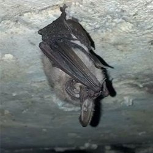
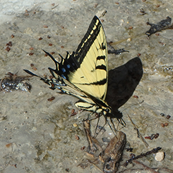
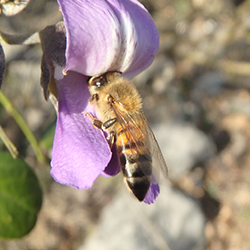
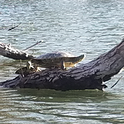
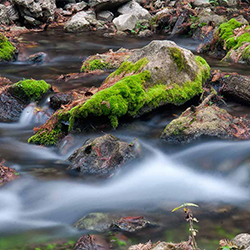
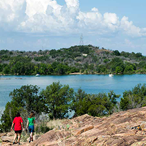
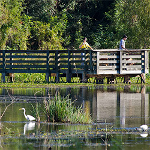

Do you know your Parks?
How many parks are there in Texas?
45
103
51
29
Which park is the largest in Texas?
Big Bend Ranch State Park.
Enchanted Rock.
Big Spring State Park.
Colorado Bend State Park.
Which Texas State Park is visited most often?
Enchanted Rock.
Garner State Park.
Palo Duro State Park
McKinney Falls State Park.
Which of these parks is not in Texas
Eisenhower State Park.
Dinosaur Valley State Park.
Falcon State Park.
Itasca State Park.
Devil's Sinkhole State Natural Area is known for which of these animals?




Which of these is Colorado Bend State Park?



Which of these is Inks Lake State Park?
Submit
You got:
__
out of 7
Park images courtesy of the
Texas Parks and Wildlife Department